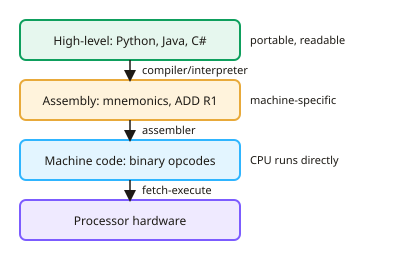

A-level Computer Science Year 12 · Topic 14
Software development and programming paradigms
Software development and programming paradigms is about how programs are designed, built and maintained.
We will compare programming paradigms and levels of language, and development methodologies from waterfall to agile.
Then we look at testing strategies, evaluation, maintenance, and the tools in an integrated development environment.
- 5 subtopics
- 173 questions
- Free: 14.1 notes and 10 questions
In this topic
- 14.1Programming paradigms and levels of language: procedural, modular, object-oriented, low-level and high-levelFree below · 38 questions
- 14.2Development methodologies: waterfall, spiral and the analysis, design, implementation, testing cycleOpen in Full Marks · 31 questions
- 14.3Agile methods, extreme programming and rapid application developmentOpen in Full Marks · 30 questions
- 14.4Testing strategies, evaluation and software maintenanceOpen in Full Marks · 43 questions
- 14.5IDEs and program development toolsOpen in Full Marks · 31 questions
14.1 · Free notes
Programming paradigms and levels of language: procedural, modular, object-oriented, low-level and high-level

Key points
- The procedural paradigm builds a program as a sequence of instructions grouped into procedures/subroutines (functions) that are called in order. It uses sequence, selection and iteration, and is typical of C, Pascal and basic Python.
- Modular programming splits a large program into modules/subroutines, each with a single clear task. Modules can be written and tested independently, shared between team members and reused. They communicate through parameters and return values, and use local variables.
- The object-oriented (OO) paradigm models a program as objects that combine attributes (data) and methods (behaviour). A class is the blueprint and an object is an instance of it. Objects are created by instantiation.
- Encapsulation keeps attributes private and allows access only through public methods (getters/setters). This hides implementation detail and protects data from accidental or invalid changes.
- Inheritance lets a subclass (child) acquire the attributes and methods of a superclass (parent), which promotes code reuse. Polymorphism lets a subclass override a method so the same call behaves differently depending on the object type.
- Low-level languages are close to the hardware: machine code (binary opcode + operand) and assembly language (mnemonics such as ADD, LDR). They are machine/architecture-specific, so they are not portable.
- Assembly is translated by an assembler, usually one mnemonic to one machine instruction (one-to-one). Programmers can directly use registers and memory addresses.
- High-level languages (Python, Java, C#) use English-like statements, are portable and are easier to read, write, debug and maintain. One statement becomes many machine instructions, and a compiler or interpreter translates it.
- Low-level code gives fine control of hardware, speed and memory use. This suits embedded systems, device drivers and real-time systems, but development is slow, error-prone and hard to maintain. High-level languages give faster development at the cost of less hardware control.
- Exam tip: match the paradigm to the scenario. Use OO for large systems with many related entities (e.g. customers and accounts). Use procedural/modular for simple linear tasks. Use low-level for tiny, timing-critical devices. Always justify with a benefit and a drawback.
- An imperative high-level language gives instructions that are carried out in order and change the program's state (the values of variables). Procedural and object-oriented languages are imperative, unlike declarative languages such as SQL, which describe the result wanted.
In more detail
- Worked procedural: C programs are sequences of procedures that act on data.
- Worked object-oriented: a Java game models Player and Enemy classes, each with attributes and methods.
- Worked declarative: SQL says what data you want, not how to find it.
- Worked low-level use: device drivers and very speed-critical routines are sometimes written in assembly.
- Worked modular: splitting a program into a maths module and a display module lets different programmers work on each.
Practice
Programming paradigms and levels of language: procedural, modular, object-oriented, low-level and high-level: 10 questions
Pick an answer to check it, or open the answer for the explanation.
1. Which paradigm models a program as a set of objects, each combining data and the methods that act on that data?
- Assembly
- Procedural
- Object-oriented
- Modular
Show answer
C: Object-oriented. Object-oriented programming bundles attributes (data) and methods (behaviour) into objects created from classes. Procedural and modular approaches organise code into subroutines instead.
2. A programmer splits a 5000-line program into separate subroutines, each doing one task and tested on its own. Which approach is this?
- Machine-code programming
- Encapsulation
- Modular programming
- Polymorphism
Show answer
C: Modular programming. Modular programming divides a program into independent modules/subroutines with single tasks, which can be tested separately and reused.
3. In object-oriented programming, what is a class?
- A list of private variables only
- A blueprint defining the attributes and methods of objects
- A subroutine that always returns a value
- A single running instance holding its own data
Show answer
B: A blueprint defining the attributes and methods of objects. A class is a template; objects are instances created from it. Each object holds its own attribute values, using methods defined in the class.
4. A Dog class is built on an Animal class and reuses its attributes and methods. Which OOP concept is this?
- Inheritance
- Instantiation
- Polymorphism
- Encapsulation
Show answer
A: Inheritance. Inheritance lets a subclass acquire attributes and methods from a superclass, giving code reuse. Instantiation is creating an object from a class.
5. Making attributes private and letting other code reach them only through public methods is called what, and why is it useful?
- Polymorphism; it speeds up execution
- Inheritance; it allows code reuse
- Instantiation; it creates new objects
- Encapsulation; it protects data from accidental change
Show answer
D: Encapsulation; it protects data from accidental change. Encapsulation hides an object's internal data and exposes controlled methods, so values cannot be changed accidentally or set to invalid values.
6. Which statement about assembly language is correct?
- Each mnemonic generally translates to one machine instruction
- It needs no translation before running
- It is translated by an interpreter only
- It runs unchanged on any processor
Show answer
A: Each mnemonic generally translates to one machine instruction. An assembler translates mnemonics into machine code, usually one-to-one. Assembly is processor-specific, so it is not portable.
7. Which program is most likely to be written in a low-level language?
- A spreadsheet macro
- A school timetable application
- A driver for a microcontroller with only 2 KiB of RAM
- A website booking form
Show answer
C: A driver for a microcontroller with only 2 KiB of RAM. Tiny memory and direct hardware control suit assembly/low-level code. The other tasks are better served by high-level languages for faster development.
8. Which is an advantage of high-level languages over assembly language?
- One statement maps to exactly one instruction
- They give direct control of registers
- They always produce smaller, faster code
- They are portable across different processor types
Show answer
D: They are portable across different processor types. High-level code is portable (it is translated for each processor) and easier to write and maintain. It gives less hardware control, and one statement becomes many instructions.
9. A 16-bit machine-code instruction has a 4-bit opcode and a 12-bit operand. What is the maximum number of different operations?
- 16
- 256
- 12
- 4
Show answer
A: 16. A 4-bit opcode gives 2^4 = 16 different bit patterns, so at most 16 operations. The 12-bit operand gives 4096 possible addresses or values.
10. A team of 20 builds a large GUI application with many related entities such as customers, accounts and orders. Which paradigm is most suitable?
- A single huge procedure
- Assembly language
- Object-oriented
- Machine code
Show answer
C: Object-oriented. OO models real-world entities as classes, supports team working through encapsulation, and allows reuse through inheritance. This suits large, complex systems.
Keep going in Full Marks
Full Marks has 38 questions on Programming paradigms and levels of language: procedural, modular, object-oriented, low-level and high-level (28 more than here), set out in practice levels. You also get notes and 3D models for all 5 subtopics of Software development and programming paradigms, plus games, timed exams and past papers.